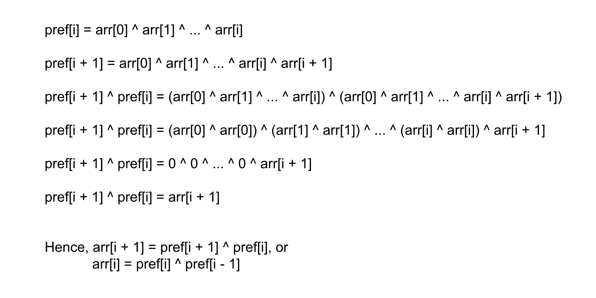

Intuition
There exists an array arr of NN integers and we
are given another array pref in which the ith index has the value as pref[i] =
arr[0] ^ arr[1] ^ ... ^ arr[i]. We need to return the original array arr which will generate
the array pref using the above XOR operations.
An important property of XOR that we can use to solve this problem is a ^ a = 0, i.e. the
XOR of two same integers is equal to 0. The value in the array pref at index
i is equal to arr[0] ^ arr[1] ^ ... ^ arr[i], and the value in the index i +
1 is equal to arr[0] ^ arr[1] ^ ... ^ arr[i] ^ arr[i + 1]. Now, if we perform the
XOR operation with pref[i] and pref[i + 1] the expression would be as shown
below.

Note that we have also used the XOR Associative & Commutative properties while rearranging the expression in the above diagram to come at the result.
In the above XOR expression, each index has two terms except the arr[i + 1], and hence all other terms
will be evaluated to 0. Thus the final expression will evaluate to arr[i + 1]. This
happened because the terms pref[i] and pref[i + 1] have the same value expression except
that pref[i + 1] has one more extra term which is the only remained term when XOR operation is
performed.
Therefore, the i−thi-\text{th} index in the array arr can be found by
taking the XOR of pref[i] and pref[i - 1], also for index i = 0 the value
arr[0] will be equal to the pref[0] as the value expression for pref[0] is
equal to arr[0] itself.
Algorithm
arr of size NN,
this will store the final result.
arr[0] as pref[0], because the XOR of all numbers on and before the
0th index will be the same as the number itself.
1 to N−1N - 1,
and for each index i:
pref[i] ^ pref[i - 1] to arr[i].arr.Implementation
Java
class Solution {
public int[] findArray(int[] pref) {
int n = pref.length;
int[] arr = new int[n];
arr[0] = pref[0];
for (int i = 1; i < n; i++) {
arr[i] = pref[i] ^ pref[i - 1];
}
return arr;
}
}
C++
class Solution {
public:
vector findArray(vector& pref) {
int n = pref.size();
vector arr;
arr.push_back(pref[0]);
for (int i = 1; i < n; i++) {
arr.push_back(pref[i] ^ pref[i - 1]);
}
return arr;
}
};
Complexity Analysis
Here, NN
is the number of elements in the array pref or arr.
Time complexity O(N)O(N)
We are iterating over each element only once in the array pref, the XOR operation takes O(1)O(1) and hence the total time
complexity is equal to O(N)O(N).
Space complexity O(N)O(N)
The only space required is the array arr to store the result, although the space to store the
result is generally not considered as part of the space complexity. The total space complexity is equal to
O(N)O(N).
Intuition
Note: This approach requires altering the input which is not recommended in an interview setting, This approach has been added for the completion sake and should only be presented in an interview if explicitly asked.
To find the value at an index i in the array arr we need the values at indices
i and i - 1 in the array pref. In the previous approach, since we were
iterating from left to right, we needed a separate array to store the values. This is because when we calculate the
value of index i, we can't put it directly into the array pref to override
pref[i], because we need to use the original value of pref[i] again when we compute the
value of arr[i + 1] later.
Therefore, instead of iterating from left to right, we will iterate from right to left and store the answers directly
in the array pref itself. This way, when we store the value for index i in the
pref using pref[i] ^ pref[i - 1] we don't need the value of pref[i] again.
Because the next value to be calculated is at index i - 1 which will be calculated as pref[i - 1]
^ pref[i - 2]. In this way, we can use the original input array pref itself to store the
answer.
Algorithm
pref from the index N - 1 to 1 and for each index
i, do:
pref[i] = pref[i] ^ pref[i - 1]0 as it will be returned as it is.pref.Implementation
Java
class Solution {
public int[] findArray(int[] pref) {
int n = pref.length;
for (int i = n - 1; i > 0; i--) {
pref[i] = pref[i] ^ pref[i - 1];
}
return pref;
}
}
C++
class Solution {
public:
vector findArray(vector& pref) {
int n = pref.size();
for (int i = n - 1; i > 0; i--) {
pref[i] = pref[i] ^ pref[i - 1];
}
return pref;
}
};
Complexity Analysis
Here, NN
is the number of elements in the array pref or arr.
Time complexity O(N)O(N)
We are iterating over each element only once in the array pref, the XOR operation takes O(1)O(1) and hence the total time
complexity is equal to O(N)O(N).
Space complexity O(1)O(1)
No extra space is required to store the result. Therefore the total space complexity is constant.